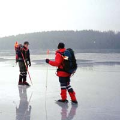

|
Förra årets säsong blev den längsta hittills i klubbens historia, men den har i år överträffats när det gäller antalet genomförda turer och mängden fina isar, som vi haft tillgång till i vårt åkområde. Under de 25 år undertecknad bott i Skåne har det aldrig funnits så mycket fina isar som under januari och och första hälften av februari i år.
Hela november och december fram till mitten av månaden var milda men omkring den 18 kom kylan mycket plötsligt och våra sjöar frös till och blev bäriga på bara tre dagar. Kring nyår kom det litet snö som försämrade insjöisarna, men istället frös en del åar och Öresundskusten till och vi fick nya fina isar. Omkring mitten av januari hade snön på insjöarna stöpt ner och blev åkbara igen fram till mitten av februari då mildvädret slog till och ganska snabbt förvandlade de hårda och släta kärnisarna till skrovliga och förrädiska vårisar.Vid månadsskiftet februari/mars var alla isar i vårt normala åkområde borta, men ett par turer kunde göras på sjöar i Småland.

Lördagen den 21 december
Isspaningstur utlyst som lockade sex åkare, som på Krankesjön hittade 6-8 cm svart blank kärnis. Efter en premiärrunda på denna kalasis lockade nya sjöar och Häckebergasjön, Fjällfotasjön och Yddingen befors innan dagen var slut. De två sistnämnda sjöarna hade fortfarande en del svaga partier.
Söndagen den 22 december
Premiärtur på Krankesjön utlyst och i strålande sol och vindstilla ställde 17 åkare upp som fick njuta av den spegelblanka isen. Tio åkare fortsatte till V. Ringsjön, som hade lika fin is. Samma dag åkte tre medlemmar med KRIS på Immelns blanka men inte överallt bäriga is.
Torsdagen den 26 december - Annandag jul
En grupp om fyra åkare körde Ringsjöarna runt och en annan grupp på 12 åkare befor Vombsjön, Sövdesjön och Snogeholmssjön på blanka, hårda kärnisar och i strålande väder. Tre entusiaster avslutade på Ellestadssjön.
Lördagen den 28 december
Tolv medlemmar befor denna dag Perstorps dammar, där man på de snöfria isarna kunde åka i alla vikar och smala passager mellan flytöar och land, ibland med en del klivande över nerfallna trädstammar eller andra hinder för att komma vidare. Fem sjöar hanns med: Store damm, Fåglasjön, Svenstorpssjön, Håkantorps Mölledamm och Store sjö.
Söndagen den 29 december
Mulet och något snö i luften och utlyst tur för mindre vana åkare lockade bara två vana åkare, som fick en fin tur på Sövdesjön, Snogeholmssjön och en del av Vombsjön. En annan grupp om nio medlemmar åkte Oppmannasjön, Raslången och Halen. Ett försök på Ivösjön fick avbrytas på grund av för tunn is.
Måndagen den 30 december
Fyra åkare på Vombsjön fick efter en kortare runda ge upp i tilltagande snöfall och hård vind.
Tisdagen den 31 december - Nyårsafton
Endast två åkare ställde upp på utlyst tur till Västersjön och Rössjön, som visade sig ha i stort sett blank snöfri is. Man åkte även på Vegeån från Skälderviken, förbi Vegeholms slott, över slottsdammarna och fram till bron över väg 112. Onsdagen den 1 januari - Nyårsdagen
I soligt men kallt väder samlades 18 åkare vid Lödde kanotklubb för färd på Lödde å. Man åkte först upp mot Högs kyrka på ganska bra is men med många strömmande, öppna partier som kunde passeras längs kanten på ån. Isen blev sedan dålig, varför man återvände till Lödde och fortsatte på svart fin kärnis ut till mynningen vid Bjärred, där isen tog slut. Åter till Lödde, varifrån halva gruppen fortsatte till Häljarp och åkte på Saxån ut på Lundåkrabukten och till Gipsön utanför Landskrona och åter till Häljarp. Torsdagen den 2 januari
Ännu en tur från Häljarp med 10 åkare ut till Gipsön med sina 11 vindkraftverk, in i hamnbassängen i Landskrona och sedan rakt över Lundåkrabukten till i höjd med Barsebäcks golfbana och åter till Häljarp. Som avslutning en runda på vallgravarna vid Citadellet i Landskrona.
Fredagen den 3 januari
Gårdagens tur på Lundåkrabukten upprepades med sju åkare i soligt väder. Lördagen den 4 januari
Ännu en solig men kall dag lockade många åkare. En grupp på 13 medlemmar åkte till Danmark och befor Esrum Sö och Arressö på blanka, hårda men inte överallt bäriga isar. En annan grupp om 9 deltagare åkte på Saxån, Braån, Lundåkrabukten och som avslutning Lödde å ut till mynningen och tillbaka till Lödde.
Söndagen den 5 januari
Denna dag gick turerna på Höllvikens fina isar. En grupp om 7 åkare startade vid
Klagshamn och åkte söderut till Höllviken, gick över bron vid Falsterbokanalen och fortsatte ut till Skanör, vidare på dammarna innanför strandkanten mot Falsterbo udde och sedan ut till yttre änden på Måkläppen. En andra grupp om 13 åkare startade vid Hammars udde, åkte en stor runda på Höllviken och tog sedan bilarna till Falsterbo och skrinnade ut till Måkläppen.
Måndagen den 6 januari - Trettondagen
Tre olika grupper åkte denna dag. En grupp om fyra deltagare åkte till Blekinge och åkte tillsammans med KRIS från Kristianstad på Kuggebodefjärden på fina skärgårdsisar. Man såg flera örnar. En grupp om 10 åkare befor återigen Saxån och Lundåkrabukten. En tredje grupp om 7 åkare startade
vid Klagshamn och åkte först upp mot Lernacken, åter till Klagshamn och sedan längs
iskanten söderut på Höllviken, till Falsterbokanalen och tillbaka. Sydsvenskan gjorde
ett reportage under turen.
Tisdagen den 7 januari
Nu ville Sydnytt även göra ett reportage och fyra åkare gjorde några rundor utanför
Bjärred inför deras med "tjänstespark" utrustade fotograf.
Lördagen den 11 januari
En grupp om 16 åkare prövade den för oss helt nya Storesjö vid Laholm. Tyvärr var isen snötäckt och tungåkt, varför man åkte ned till kusten och prövade Laholmsbuktens fina is. Gruppen blev även intervjuad av Laholmstidningen, som hade ett stort reportage nästa dag med fina skridskobilder. Tre medlemmar åkte också denna dag med KRIS på Pukaviksbukten på is av växlande kvalitet. Inför denna helg hade det bildats mycket nyis på bl.a.Lommabukten och Höllviken, och massor av skridskoåkare gav sig ut utan vare sig säkerhetsutrustning eller isvana och åkte överallt utan tanke på om isen bar eller
inte. Vi fick in flera rapporter om åkare som gått igenom isen, varför vi kontaktade Sydsvenskan, som på måndagen gick ut med en varning .
Söndagen den 12 januari
I blåsigt väder med inslag av underkylt regn gjorde sex medlemmar en kortare tur på
Saxån och Lundåkrabukten. Lördagen den 18 januari
En grupp på fyra medlemmar åkte Sövdesjön, Snogeholmssjön, Ellestadssjön och Krageholmssjön på övervägande fin is. Tjugo medlemmar i två grupper åkte Yddingen, Fjällfotasjön och Börringesjön på i början något sträva och bitvis skrovliga men övervägande släta isar. Större delen av grupperna avslutade dagen på den idylliska Havgårdssjöns spegelblanka något vattentäckta is. Vädret var dimmigt och på Fjällfotasjön träffade vi på en privat åkare, som inte hittade tilbaka till bilen, eftersom han åkte runt en ö istället för som han trodde - längs sjöstranden.
Söndagen den 19 januari
I dimmigt väder gjorde två grupper med 15 deltagare en medvindstur på Ringsjöarna. Man startade vid Sjöholmen på V. Ringsjön och åkte först söderut och sedan tvärs över
sjön till Lillö, söderut igen till Gamla Bo, gick över till Ö. Ringsjön, längs
södra stranden österut och sedan norrut in i Sätoftasjön, där färden avslutades vid Jägersbo. Fin något vattentäckt is. På Ö. Ringsjön fanns en stor icke passerbar råk, där även en plurrning inträffade. Lördagen den 25 januari
Till utlyst tur på Immeln ställde 19 åkare upp, som i två grupper befor denna trevliga sjö. Turen startade vid badet vid Mjöanäs och gick sedan norrut bland öar och holmar till Brotorpet. På Skärsnäsfjorden räddades en kalv, som gått ner sig i en vak och djurägaren hämtades för att ta hand om kalven, som var starkt nerkyld.
Vid Brotorpet gick vi över till Filkesjön, som åktes i alla vikar utom den norra, som gick öppen. Åter till Immeln, upp till Nyteboda brygga, söderut igen längs västra stranden till Breanäs och sedan över sjön till Mjöanäs igen.En mycket fin tur på övervägande bra is och i soligt väder. Även flera privata turer gjordes denna dag på våra hemmasjöar.
Söndagen den 26 januari
Ännu en solig dag. En grupp om 9 nybörjare åkte Sövdesjön runt. En annan grupp om 11 lite mer vana åkare började också på Sövdesjön, fortsatte på Snogeholmssjön och avslutade på Ellestadssjön. Övervägande fina isar men lite skrovel här och var.
Lördagen den 1 februari
Högtrycksvädret fortsatte och i strålande sol mötte hela 23 medlemmar, varav många nya, upp på Vombsjöns blanka is som åktes i två , senare tre olika grupper. En avstickare in på Björkaån gjordes, en plurrning i en annan åmynning inträffade och grupperna njöt av långrast i solskenet. Majoriteten fortsatte på Sövdesjön och några entusiaster hann även med Snogeholmssjön.
Söndagen den 2 februari
lig vind och regnskurar gjorde turen mycket ansträngande.
Anders Westman |